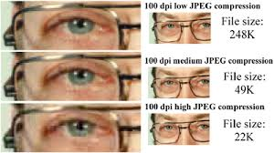

Welkom bij de pagina over compressie
Wat is bestandscompressie?
Bestanden kunnen veel ruimte in beslag nemen, waardoor de harde schijf snel vol raakt. Dit is irritant, want meer opslag kost geld. Daarom is er bestandscompressie.
Bestandscompressie maakt een bestand, zoals een afbeelding, video of muziekfragment, kleiner. Hierdoor raakt je opslag minder snel vol en kun je gemakkelijker bestanden downloaden of verzenden via het internet. Dit helpt om ruimte te besparen en het delen van bestanden eenvoudiger te maken.
Wat is lossy compressie?
Bij lossy compressie worden bepaalde delen van een bestand weggelaten om het kleiner te maken. Bijvoorbeeld, bij een afbeelding met veel verschillende kleuren en tinten die je niet kan zien met het blote oog, deze tinten worden hierbij verwijderd. Dit vermindert de bestandsgrootte, maar als nadeel gaat de kwaliteit ook omlaag.
Wat is dan lossless?
Bij lossless compressie wordt er geen informatie weggegooid, waardoor de kwaliteit van het bestand behouden blijft. In plaats van gegevens weg te gooien, wordt de inhoud op een andere manier opgeslagen.
Neem het voorbeeld van zes pixels met dezelfde kleur die naast elkaar staan. In een ongecomprimeerd (dus NIET lossless) bestand zou dit er zo uitzien: (12, 12, 12, 12, 12, 12). Met lossless compressie kun je deze gegevens makkelijker opslaan door het samen te voegen tot (6, 12). Dit maakt het bestand kleiner dus zonder kwaliteitsverlies.
Plaatje van een lossy en lossless afbeelding:

Compressie met audiobestanden
Geluidsbestanden kunnen veel opslagruimte innemen, dus wordt vaak lossy compressie toegepast ook aan geluidsbestanden. Hierbij wordt een deel van het geluid verwijderd, net als met afbeeldingen. Het oor van de mens kan geluiden tot ongeveer 20 kHz horen. Bij compressie worden frequenties onder bijvoorbeeld 15 kHz vaak weggefilterd zonder een echte kwaliteitsverlies.
De sample rate bepaalt hoe vaak een geluidssignaal wordt gemeten. De hoeveelheid informatie per sample is de bitrate. Samen bepalen deze factoren de bestandsgrootte in kbps (kilobits per seconde). Muziek wordt vaak opgenomen met 44.100 Hz en 32 bits per sample, wat leid tot een bitrate van 1.411,2 kbps. Hoewel kwaliteitsverschillen soms niet te merken zijn, kan compressie de grootte van audiobestanden erg veel verkleinen, zodat je meer muziek kunt opslaan.